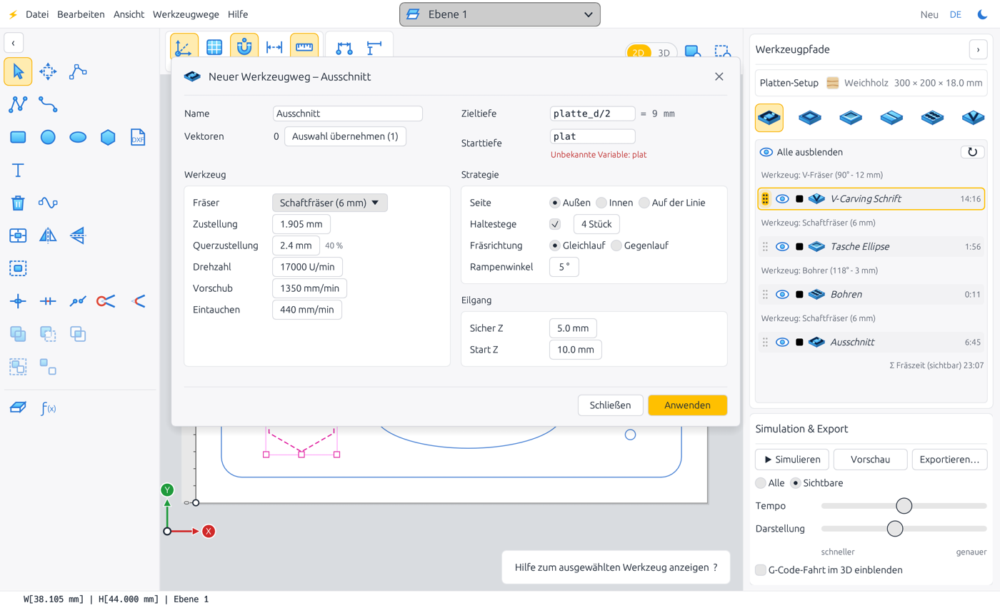

Formeln in Maßfeldern New in CncCraft
Jedes Zahlenfeld rechnet mit: Grundrechenarten, Klammern, Potenzen und Variablen.
In allen Maßfeldern – Breite, Höhe, Radius, Position, Constraint-Werte sowie Start- und Schnitttiefe der Werkzeugwege – können Sie statt einer Zahl eine Formel eintippen.
Was erlaubt ist
| Schreibweise | Bedeutung |
|---|---|
+ - | Addieren, Subtrahieren |
* × · | Malnehmen (der Buchstabe x ist kein Malzeichen, damit er als Name taugt) |
/ ÷ | Teilen |
^ | Potenz (2^3 = 8; 2^3^2 wird von rechts gerechnet) |
( ) | Klammern |
12,5 oder 12.5 | Dezimalzahl (Komma oder Punkt) |
breite, {Rand links} | Variable (Variablen) |
Punkt vor Strich gilt wie üblich. Ein = am Ende rechnet die Formel sofort aus und ersetzt sie durch die Zahl.
Gebundene Maße
Enthält ein Maßfeld eine Formel mit Variablen, ist das Maß gebunden: Ändert sich die Variable, passt sich die Form an. Dabei gilt:
- Die untere linke Ecke der Form bleibt fest; die obere beziehungsweise rechte Kante wandert.
- Die Griffe einer gebundenen Richtung sind gesperrt (blaue Rauten). Ziehen Sie an der freien Richtung, ändert sich nur sie.
- Ändern Sie den Wert dagegen von Hand im Formular oder verschieben Knoten, löst sich die Bindung.
Tippen Sie bei einem Rechteck oder einer Ellipse eine Breite oder Höhe ein, ist das technisch dasselbe wie eine Abstands-Bedingung von der linken unteren Ecke: Die Seite ist danach festgelegt und in der Zeichnung schwarz; freie Seiten sind blau.
Fehler
Ist eine Formel ungültig oder kennt sie eine Variable nicht, wird das Feld rot und nennt den Grund („Unbekannte Variable: …“). Solange das Feld ungültig ist, schließt Enter es nicht – Esc verwirft die Eingabe.


Mit der Formel platte_d als Schnitttiefe fräst ein Ausschnitt immer genau durch das Material – auch wenn Sie die Dicke im Job später ändern.